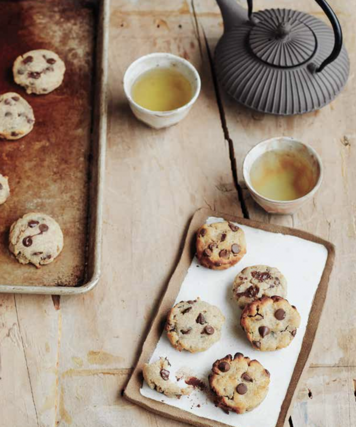

Description
These soft cookies are my take on a salted chocolate treat. As I tested them with my friends, everyone kept asking,
“What is in these cookies!?”
To everyone’s surprise, it’s the touch of salty-sweet miso paste makes these cookies so addictive!
Nonstick olive or coconut oil cooking spray
Ingredients
- 1⁄3 cup organic sugar
- 1⁄2 cup unrefined coconut oil, melted
- 1 teaspoon organic vanilla extract
- 1⁄2 cup organic red or white miso paste (reduced-sodium miso is best)
- 2 large eggs
- 2 cups gluten-free flour
- 1⁄2 teaspoon baking soda
- 1 cup dark chocolate chips
Steps
- Preheat the oven to 325°F. Line a baking sheet with aluminum foil and coat with cooking spray.
- In a medium bowl, whisk the sugar and coconut oil well to combine. Add the vanilla and miso paste and whisk well. Add the eggs and whisk gently to combine.
- Using a rubber spatula, fold in the our and baking soda and mix to combine the wet and dry ingredients. Fold in the chocolate chips.
- Using a small ice cream scoop, scoop the cookies onto the prepared bak- ing sheet, spacing them slightly apart.
- Bake the cookies for 12 to 13 minutes. Remove from the oven and transfer to a wire rack to cool slightly.
- Store the cookies in an airtight container for up to 1 week.